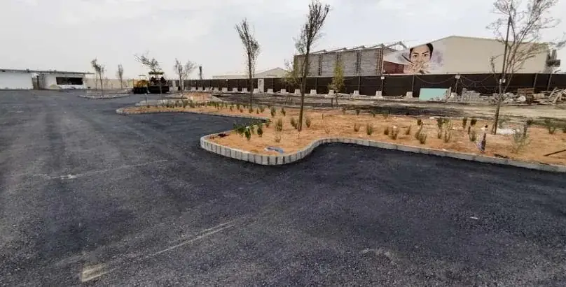

قوة في التنفيذ.
ثقة في الإنجاز.
من البنية التحتية والخرسانة إلى الهياكل المعدنية والتشطيبات، خبرات ميدانية تترجم الرؤية إلى أعمال ملموسة.

نترك بصمتنا
في كل تفصيل.
أسود نجد مؤسسة سعودية للمقاولات العامة تأسست في الرياض عام 2022، بخبرات عملية في تنفيذ نطاقات متنوعة لمشاريع عمرانية وبنية تحتية وثقافية.
لا نقدّم وعودًا أكبر من أعمالنا؛ نعرض الخبرة كما هي: مشاريع منفذة، صور من الموقع، وتخصصات واضحة يمكن الاعتماد عليها.
تعرّف على المؤسسة↗أعمالنا تتحدث
عن خبرتنا.
مختارات موثقة من سجل التنفيذ. لكل مشروع طبيعته، ولكل إنجاز تفاصيل تستحق أن تُروى.
جميع المشاريع↗التزام هندسي.
تنفيذ مسؤول.
نغطي نطاقات أعمال مدنية وإنشائية ومعمارية، ونعمل بشراكة واضحة مع الملاك والمطورين والمقاولين الرئيسيين.
استكشف قدراتنا↗من دراسة النطاق
إلى جودة التسليم.
منهج منظم في كل مرحلة؛ التنسيق المسبق والتخطيط والمتابعة الميدانية والتسليم وفق المتطلبات.
فهم المتطلبات
دراسة المخططات والمواصفات وحدود نطاق العمل.
التخطيط والتنسيق
تحديد الموارد والأولويات ومتطلبات الموقع.
التنفيذ والمتابعة
متابعة الأعمال واشتراطات السلامة وضبط الجودة.
المراجعة والتسليم
فحص البنود والتأكد من استيفاء المتطلبات.